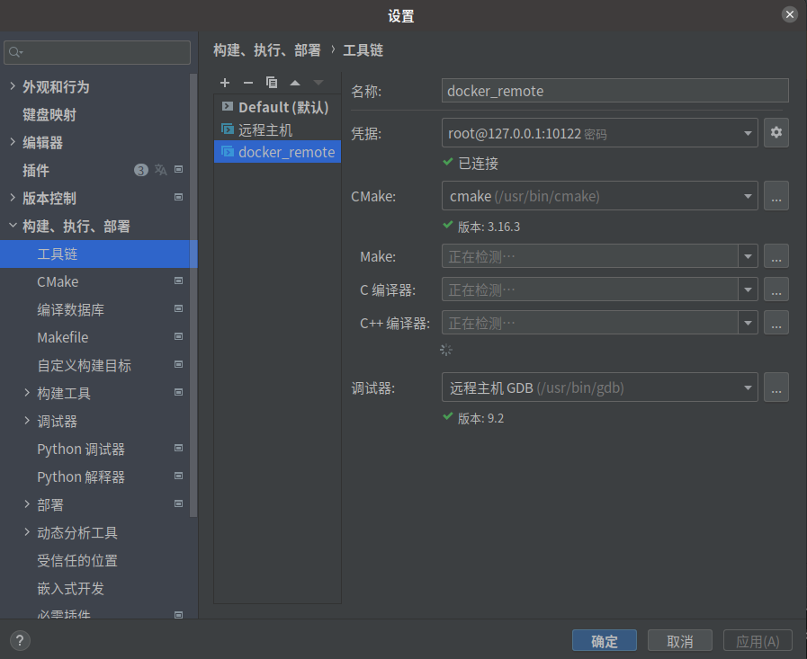
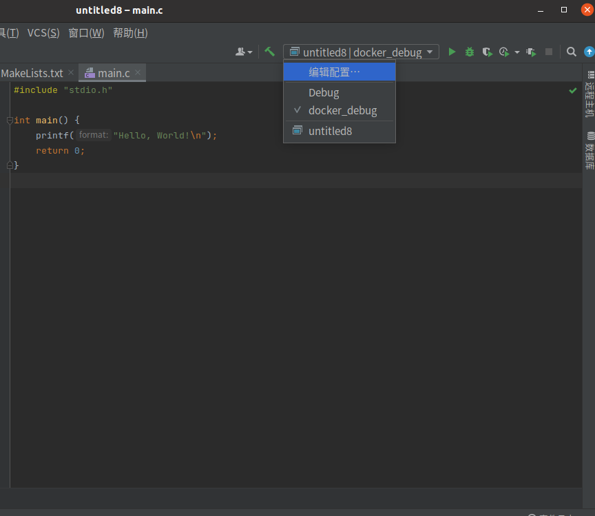

Clion-Docker的C\C++调试环境
环境信息
- CLion 2021.1.1
- Docker version 20.10.8, build 3967b7d
- Docker镜像 Ubuntu20.04
一、制作镜像
1. 编写Dockerfile
1 | FROM ubuntu:20.04 |
看需求按照 gcc、g++ 等，如有其他需要可以在里面加。
2. 构建镜像
1 | sudo docker build -t C++_docker . |
构建成功就有提示：
Successfully built fdf5d0cdc6f2
Successfully tagged test:latest
二、运行镜像
1 | sudo docker run -itd -p 10122:22 _docker |
三、Clion设置
1. 首先在CLion中添加SSH
在设置中的工具 —> SSH配置 —> 点击+号添加

2. 在Clion 添加工具链
在设置中的 构建、执行、部署 —> 工具链 —> 点击+号添加
3. 在Clion 添加远程cmake
- 构建、执行、部署
- cmake
- 点击+号添加
- 修改名称为自己需要的名称
- 构建类型选择自己需要的类型
- 工具链选择刚刚创建的工具链
- 其他选项看情况修改
4.重新载入cmake项目
点击主界面上栏的 文件 中的 重新加载cmake项目
5.查看、设置构建项
把构建配置选为刚刚设置的配置
四、完成
1. 运行
可以看到在生成的目录是远程的目录

2. 调试
调试也正常

All articles in this blog are licensed under CC BY-NC-SA 4.0 unless stating additionally.